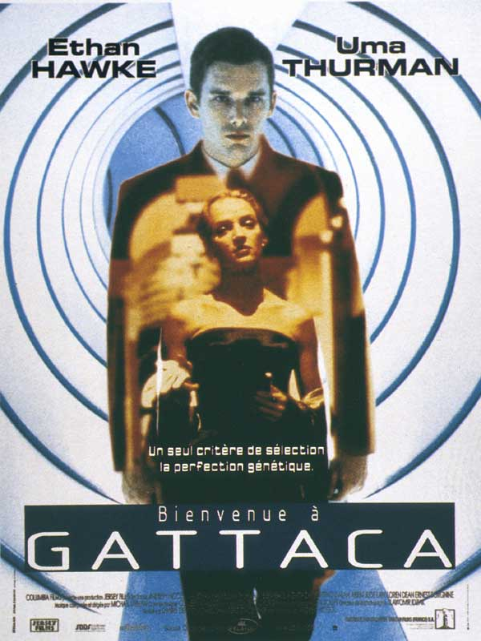
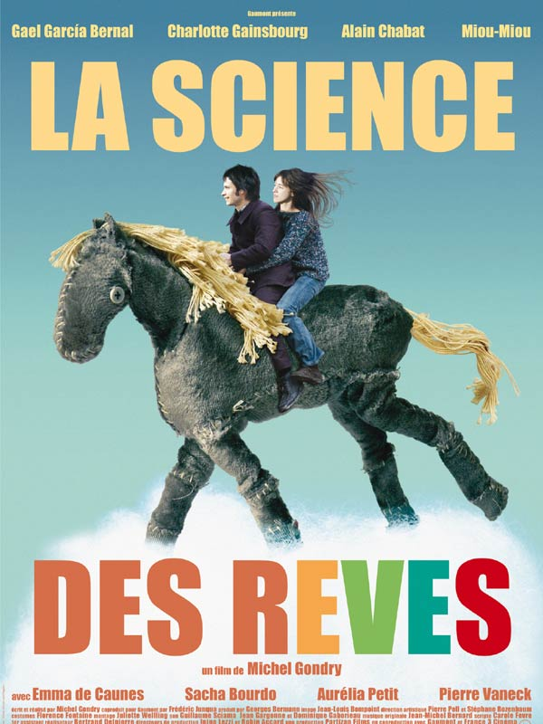

Florian COUSIN
CEO @ Le Joueur de Flute
Après 10 années d'une belle carrière de musicien qui m'a amener à jouer dans les plus belles salles du monde, je me suis vite apperçu des inégalités d'accès au spectacle. J'ai donc décidé d'entreprendre afin de développer la première plateforme intégrée et participative de diffusion artistique qui permettra à tout à chacun d'accéder localement au spectacle vivant.
Mes films préférés

|
Big FishL'histoire à la fois drôle et poignante d'Edward Bloom, un père débordant d'imagination, et de son fils William. Ce dernier retourne au domicile familial après l'avoir quitté longtemps auparavant, pour être au chevet de son père, atteint d'un cancer. Il souhaite mieux le connaître et découvrir ses secrets avant qu'il ne soit trop tard. L'aventure débutera lorsque William tentera de discerner le vrai du faux dans les propos de son père mourant. |
|  |
Bienvenue à GattacaDans un monde parfait, Gattaca est un centre d'études et de recherches spatiales pour des jeunes gens au patrimoine génétique impeccable. Jérôme, candidat idéal, voit sa vie détruite par un accident tandis que Vincent, enfant naturel, rêve de partir pour l'espace. Chacun des deux va permettre à l'autre d'obtenir ce qu'il souhaite en déjouant les lois de Gattaca. |
|  |
La science des rêvesVenu travailler à Paris dans une entreprise fabriquant des calendriers, Stéphane Miroux mène une vie monotone qu'il compense par ses rêves. Devant des caméras en carton, il s'invente une émission de télévision sur le rêve. Un jour, il fait la connaissance de Stéphanie, sa voisine, dont il tombe amoureux. D'abord charmée par les excentricités de cet étonnant garçon, la jeune femme prend peur et finit par le repousser. Ne sachant comment parvenir à la séduire, Stéphane décide de chercher la solution de son problème là où l'imagination est reine... |